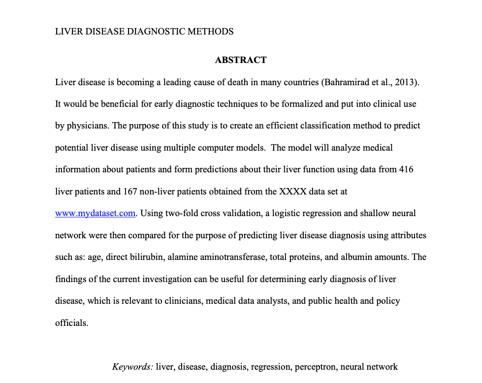
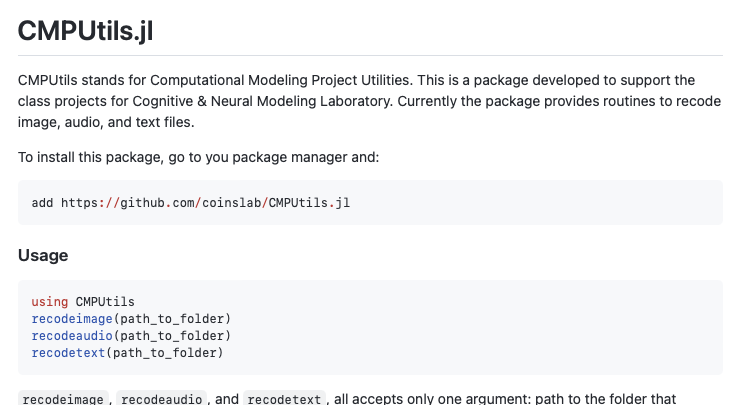
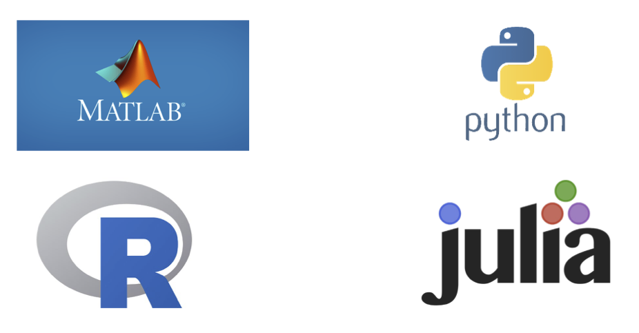

Lab 1: Hello Julia! 
Lab Teaching Objective:
Train you with the necessary tools and skills you need to complete your modeling project
Student Objectives:
- Identify an engineering or scientific problem in Artificial Intelligence, Psychology, or Cognitive Neuroscience.
- Identify & assess the quality of the data required to empirically investigate the problem.
- Develop a 1 page project proposal abstract.
- Use the machine learning skills acquired through the lab and theory to investigate the problem.
- Recode the data using unsupervised learning (if necessary).
- Implement a simple logistic regression model, shallow neural network, and a deep neural network model.
- Evaluate the performance of your model (Confusion Matrix).
- Do 2-fold cross-validation.
- Compare the results of competing models.
- Present the results of your study as a 15-minute talk.
- Write and submit a ~10 page project report in APA Journal Article format.
SO 1: Identifying the problem
- You fill out a project interest survey
- Artificial Intelligence Project Examples:
- Email Spam Filter, Speech Recognition System, Twitter Hate Speech Detection
- Psychology Project Examples:
- Human Emotion Classification using Eye-Feature, Psychopathy Diagnosis
- Cognitive Neuroscience Project Examples:
- Alzheimer’s detection using fMRI, Analysis and Modeling of Neural Ensemble Rehearsal During Sleep, Tumor detection using MRI, Autism diagnosis using fMRI
- Artificial Intelligence Project Examples:
- You form groups by yourself or we help you find project groups
SO 2: Identify & assess the quality of the data
Some places to look for Data
- Kaggle: For all sorts of datasets.
- UCI Machine Learning Repository: For all sorts of datasets.
- UCLA Library: For Psychological datasets.
- CMU Datashop: For Educational & Psychological datasets.
- OpenNeuro: For Neuroscience datasets.
- CRCNS: For Neuroscience datasets.
- RDatasets: A collection of common datasets used in all Statistical/Machine Learning textbooks.
- Google Dataset Search
SO 3: Project Proposal Abstract

SO 4: Machine Learning Skills/Tools


Common ML Languages

Why Julia ?
- Open Source (Free to Use, No license required to do commercial project in Julia)
- Less verbose (compared to R & Python)
- Best-in-class interoperability (with R, Python & C)
- Really fast when implementing computationally complex algorithms
- Good software engineering principles instantiated in the language design
- Used widely in High Performance Scientific Computing
Shortcomings
- Relatively young community –> fewer packages compared to R or Python (
RCall.jl&PythonCall.jlto the rescue) - Package installation can take some time (continually improving with each update)
Topics to cover
- Installing Julia
- Change language type in a new file
- Know your IDE
- Julia REPL Modes
- Installing Packages
- Creating a Julia Script
- Project Environments